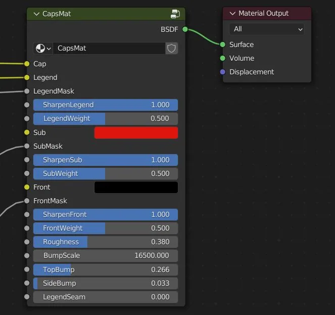
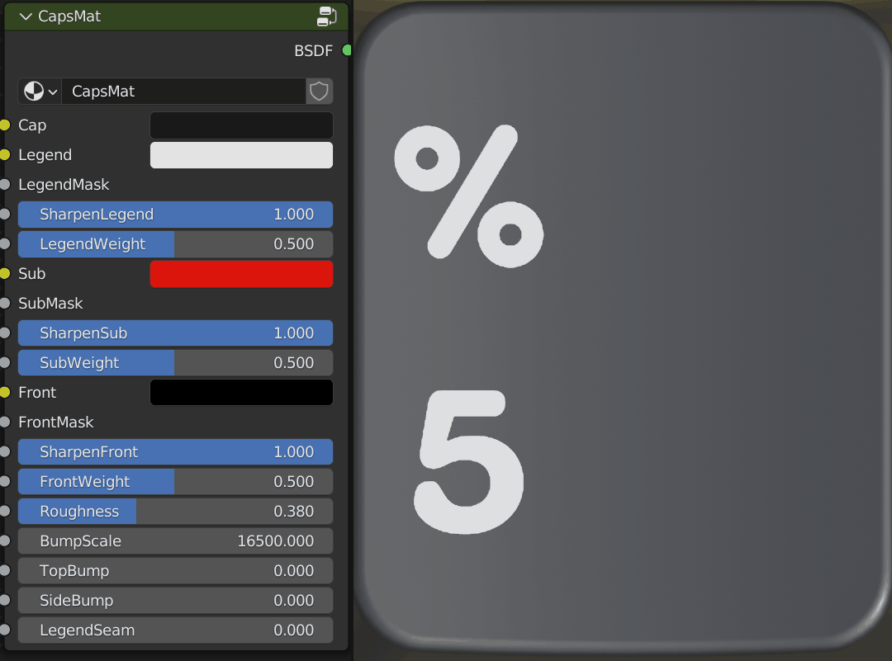
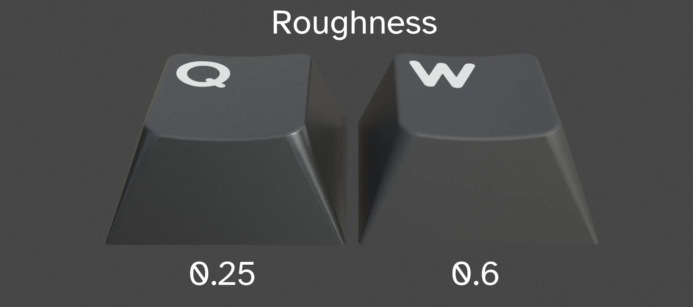
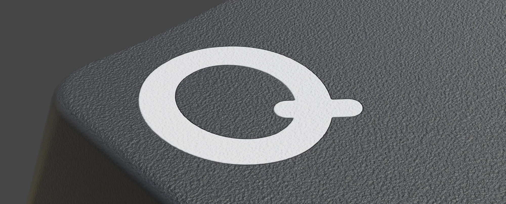
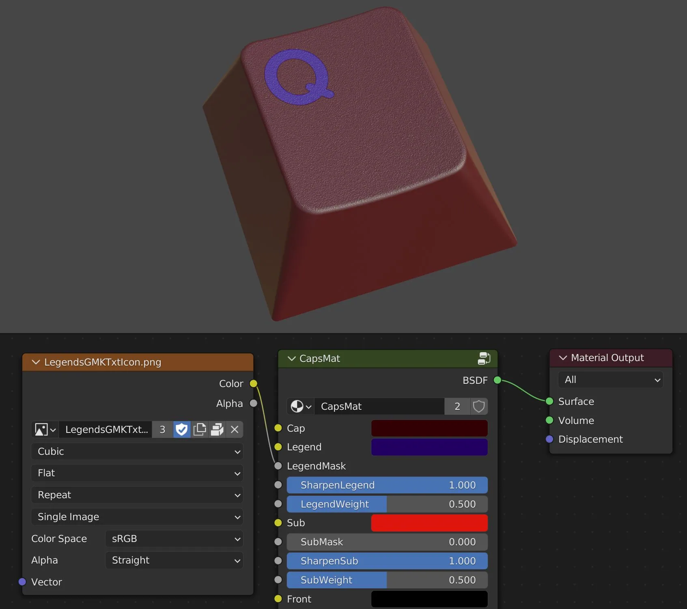

Capsmat#

Einstellungen#
Cap#
Dies ist die Grundfarbe des Keycaps, die über das Farbfeld oder über den Socket mit einer Palette gesteuert werden kann.
Beschriftung#
Dies ist die Farbe der Beschriftung. Sie können eine Farbe wählen, eine Palette anschließen, um die Farbe zu steuern, oder sogar ein Bild in den Socket stecken, um vollfarbige Beschriftungen zu erhalten.
Beschriftungsmaske#
Ein weißes Bild auf schwarzem Grund wird in diesen Socket gesteckt, um zwischen der Cap-Farbe und der Beschriftungsfarbe zu mischen.
Beschriftung schärfen#

Dies wird verwendet, um die Kante der Beschriftung zu schärfen, damit sie wie eine Doubleshot-Beschriftung wirkt. Standardmäßig ist dieser Wert auf Maximum gesetzt, Sie können ihn jedoch auf null schieben, um eher den Look einer Farbsublimation zu simulieren.
Beschriftungsstärke#

Aufgrund der Funktionsweise der Beschriftungsschärfung kann es sinnvoll sein, die Stärke zu verschieben, um die Beschriftung fetter zu machen. Eine kleinere Zahl bedeutet eine fette Beschriftung.
Sub#
Dies ist die Farbe der Zusatzbeschriftungen.
SubMask#
Dies ist der Socket, in den Sie Ihre Zusatzbeschriftungsdateien stecken können.
Sub schärfen#
Wie „Beschriftung schärfen“, jedoch für Zusatzbeschriftungen.
Sub-Stärke#
Wie „Beschriftungsstärke“, jedoch für Zusatzbeschriftungen.
Front#
Dies ist die Farbe für die Frontbeschriftungen.
Frontmaske#
Dies ist der Socket für die Frontbeschriftungsmaske.
Front schärfen#
Wie „Beschriftung schärfen“, jedoch für Frontbeschriftungen.
Front-Stärke#
Dies ist dasselbe wie „Beschriftungsstärke“, jedoch für Frontbeschriftungen.
Rauheit#

Dies ist die Gesamtrauheit bzw. der Glanzgrad des Keycap-Materials. Sie variiert je nach Kunststoffsorte oder Oberflächenfinish, das Sie anstreben. PBT hat beispielsweise in der Regel eine höhere Rauheit als ABS.
Bump-Skalierung#

Dies ist die Skalierung bzw. Körnung des Bump-Rauschens. Stellen Sie es sich wie die Körnung von Schleifpapier vor: Eine größere Zahl steht für eine höhere Dichte.
Bump oben#

Dies ist die Intensität des Bumps auf der Oberseite des Keycaps.
Bump seitlich#
Dies ist die Intensität des Bumps an der Rückseite, der Vorderseite und den Seiten des Keycaps.
Beschriftungsnaht#

Bei einigen Doubleshot-Verfahren entsteht eine deutlichere Naht zwischen der Beschriftung und dem Keycap.
Masken#

Eine Maske ist ein weißes Bild auf schwarzem Grund, das definiert, wie zwei Farben oder Elemente miteinander gemischt werden. Weiß bedeutet AN und Schwarz bedeutet AUS.

Im Capsmat werden Masken verwendet, um das Cap mit der Beschriftung, das Cap mit der Zusatzbeschriftung und das Cap mit der Frontbeschriftung zu mischen. Wenn eine dieser Masken nicht vorhanden ist, wird für diesen Teil Schwarz bzw. AUS angenommen.

KRK enthält Vorlagen, um das Erstellen dieser Masken zu vereinfachen.
Der Palette-Workflow#
KRK2 führt einen neuen Workflow ein, der Ihnen bei der Farberkundung und beim Design hilft. Wie Sie inzwischen gesehen haben, können Sie im KRK-Panel die Farbe der Keycaps einzeln steuern. Sie können mit einer individuellen Farbe pro Keycap beginnen und diese Farben dann in eine Palette ziehen, um Ihr Farbschema zu definieren. Die Palette-Node-Gruppen sind die andere Komponente dieses Workflows.

Die Paletten reichen von A bis E sowie eine eigenständige Palette, die vom Material-Editor aus gesteuert wird. Sie haben acht Plätze für Farben, während Palette E vier für Farbe und vier weitere für Alphas hat.